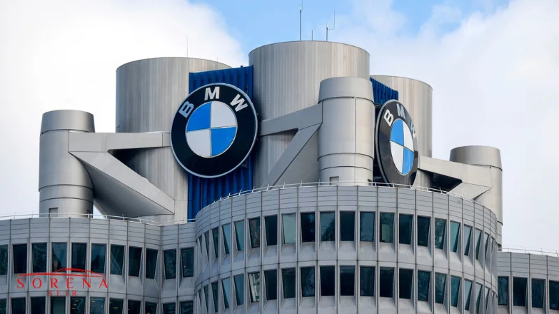

برای بسیاری از علاقمندان به خودرو، تولیدات بیامو یکی از بهترین محصولات برای خرید و یا اجاره خودرو هستند. به همین خاطر است که اجاره بی ام و یکی از پرتقاضاترین خدمات شرکتهای اجاره ماشین محسوب میشود. این شرکت پیشرو علاوه بر خودروهای سواری و باری، موتورسیکلت های بسیار باکیفیت و خاصی نیز تولید میکند. شرکتی که در حال حاضر به عنوان گروه خودروسازی BMW در جهان شناخته میشود؛ فعالیت حرفهای خود را در سال 1916 در شهر مونیخ آلمان آغاز کرده است. در حال حاضر بیش از 120 هزار کارمند در این شرکت کار میکنند که حوزه فعالیت بیش از 90 درصد آنها بخش خودرو است. بی ام و در تولید خودروهای برقی نیز یکی از شرکتهای پیشرو دنیا قلمداد میشود و محصولات آن علاوه بر کارایی عالی، از جذابیت ظاهری بسیاری بالایی برخوردارند. گروه خودروسازی BMW در سال 2021 و 2022 فعالیت خود را بر روی طراحی و تولید خودروهای برقی متمرکز کرده و توانسته در این عرصه به موفقیتهای بسیاری نیز دست پیدا کند. درآمد سالانه این شرکت حدود 128 میلیارد دلار است.
